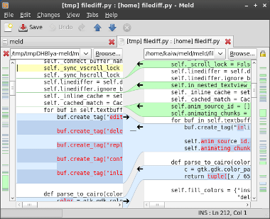

2012-06-17
Software engineers love their tools. People generally regret asking questions like “Should I user emacs or vi?” because of the devotion we put into the tools we use. It’s borderline religious. If you aren’t on their side, you are dead to them.

Given that, I still wanted share one of my favorite tools: Meld. Meld is a visual diff tool. It allows you to compare files and directories and see what is different about them.
Some may think this is only useful to developers looking for differences in previous versions of a file, but it also applies to just about anything anyone wants to compare. I’ve used it before in configuration files for some of my favorites games. I can compare other peoples configurations or changes I made to my own.
It contains all of the features you want in a tool like this, but has two that should appeal to everyone: it’s free and it’s open source. This means anyone can use it freely! I know many developers use eclipse and it works well, but you don’t always need a full blown editor nor want to install one. Beyond Compare is popular in the groups I run with as well, but it’s not free! Why pay for something you can get for free!
Give Meld a try! It’s free and easy to use. Windows, Max OSX, and Linux users welcome!